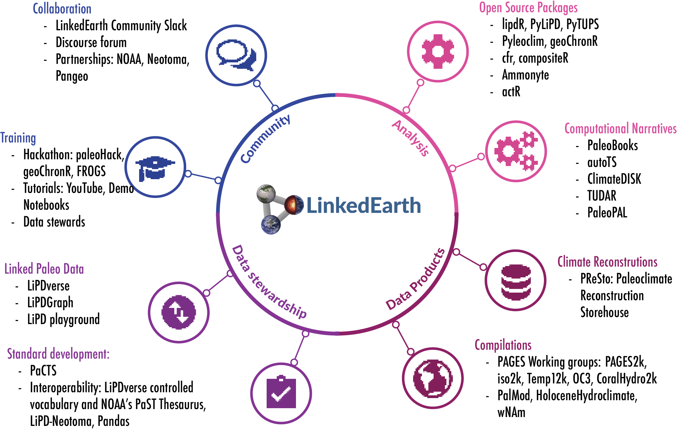

A community for the paleosciences¶
What is LinkedEarth?¶
LinkedEarth is a community of paleoscientists working to develop standards and software to enable paleoscience in the era of Big Data. This community produces data products and standards, software, cyberinfrastructure, and training opportunities.
LinkedEarth originated in 2016 through a grant from the National Science Foundation EarthCube program. The original goal of the project was to create a platform for the archival of paleoclimate dataset and to centralize the discussion about standardization of these datasets. Since then, the community has grown towards using these standards to build automated tools for the analysis of these datasets and other data products.
There is no formal registration for LinkedEarth. We hope that you will join this growing community because the tools we provide become part of your scientific workflow.
This website contains general information about LinkedEarth. For news and updates, please follow our Medium blog and our Twitter feed.
People¶
Core Team¶
As of 2021, the core team is composed of:


{kind=link}
Contributors¶
Feng Zhu, School of Atmospheric Sciences, Nanjing University of Information Science & Technology
Alexander James, Department of Earth Sciences, University of Southern California
Jordan Landers, Department of Earth Sciences, University of Southern California
Cody Rouston, School of Earth and Sustainability, Northern Arizona University
Michael Erb, School of Earth and Sustainability, Northern Arizona University
Daniel Garijo, Ontology Engineering Group, Universidad Politécnica de Madrid
Yolanda Gil, Information Sciences Institute and Department of Computer Sciences, University of Southern California
Varun Ratnakar, Karya Limited
Getting involved¶
To engage with the community, there are three main ways:
Browse our GitHub repos
Visit our Discourse forum
Email us to join an Ask Me Anything (AMA) session
Activities¶
The LinkedEarth activities can be grouped under the following:
These four umbrellas gather more specific activities, as seen on the diagram below, and detailed in the various pages of this site.
To stay up-to-date with LinkedEarth activities, subscribe to our calendar.
<br> <br>
News¶
We use twitter to share announcements and retweet content of interest to our community.
Follow @Linked_Earth Tweets by LinkedEarth